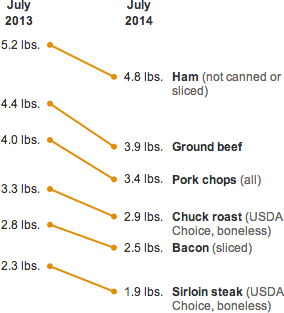

What $15 Buys Now, Compared With A Year Ago
Beef and pork prices have risen since last year, meaning consumers are getting a little less for their dollar. Here, a sample of how much $15 can buy of several popular cuts.

Notes
Data as of August 19, 2014